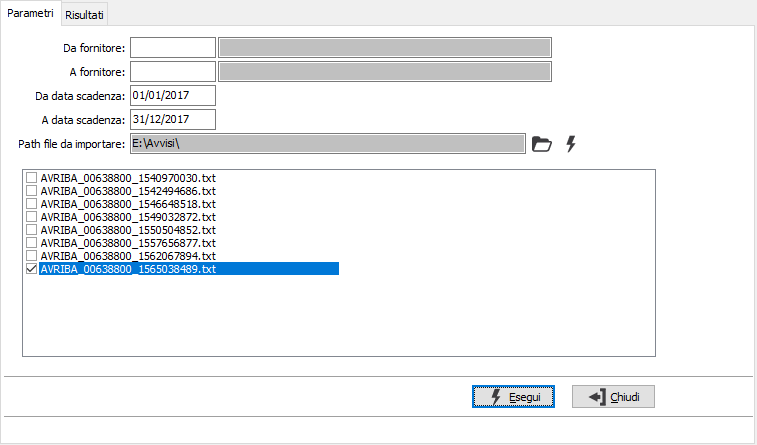
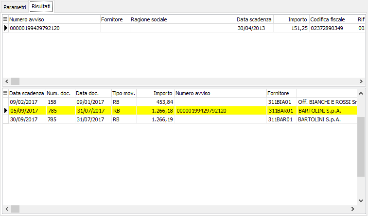

Importazione avvisi RiBa
Tramite questa procedura è possibile importare da file di avvisatura effetti passivi il numero avviso, in questa fase è possibile inoltre interagire assegnando e disassegnando il riferimento importato alle partite aperte. Il file da importare deve essere impostato secondo le specifiche del tracciato record definito dall’ABI.
La selezione sulle partite può essere effettuata per fornitore e per data scadenza, in base ai limiti impostati a video, le date di scadenza sono obbligatorie.
Nel campo “Path file da importare” viene proposta la cartella predefinita impostata in configurazione, la cartella può essere modificata tramite il pulsante Cartella, mentre tramite l'altro pulsante viene effettuata l’importazione dei file dal percorso indicato che compariranno nel riquadro sottostante; i file possono essere selezionati/deselezionati singolarmente o tramite la pressione del tasto destro del mouse da cui si accede al menù di selezione/deselezione dei file visualizzati.

Eseguendo l’operazione nella griglia dei risultati, nella parte alta della finestra, sono visualizzati gli avvisi presenti nel file elaborato, per ogni avviso vengono visualizzati la scadenza, l’importo, il codice fiscale e il riferimento operazione presenti sul file, l’avviso viene associato al primo fornitore, non obsoleto, con codice fiscale o partita Iva uguale al codice presente nel file importato.
All’avviso vengono assegnate solo le rate, di tipo RB, delle partite aperte del fornitore selezionato con data scadenza ed importo uguale ai dati presenti sul file. Se non viene trovata nessuna rata con la stessa data scadenza e stesso importo vengono automaticamente assegnate le rate delle partite, sempre di tipo RB, per data scadenza corrispondente e con importo in concorrenza. Oltre alle partite assegnate all’avviso su cui siamo posizionati, che sono quelle visualizzate in giallo, vengono visualizzate anche le partite del fornitore che rientrano nella selezione impostata nei parametri, ma che non risultano assegnate a nessun avviso. Tramite la pressione del tasto destro del mouse (o i relativi tasti funzione) viene aperto il menù di selezione/deselezione. Una partita che viene disassegnata da un avviso diventa assegnabile per gli altri avvisi del fornitore, mentre una partita che viene assegnata ad un avviso non viene più visualizzata come assegnabile per gli altri avvisi del fornitore.

In fase di salvataggio viene segnalato se ci sono avvisi non assegnati alle partite e se risultano incoerenze tra l’importo dell’avviso e l’importo assegnato; proseguendo nell’elaborazione viene aggiornato il numero avviso sulle partite e il file elaborato viene spostato nella cartella “AvvisiElaborati” presente nella path di elaborazione (se la cartella non esiste viene automaticamente creata) ed il file viene rinominato in .ok.